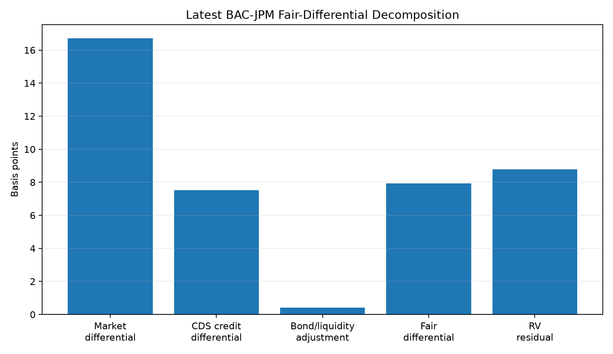
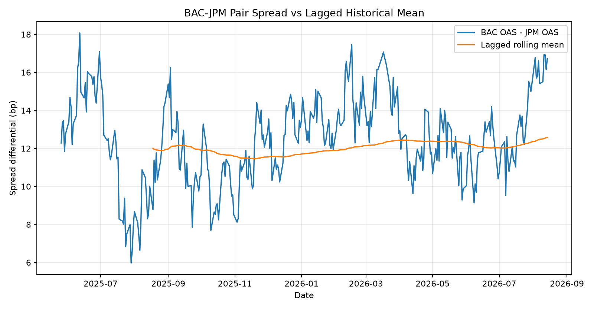
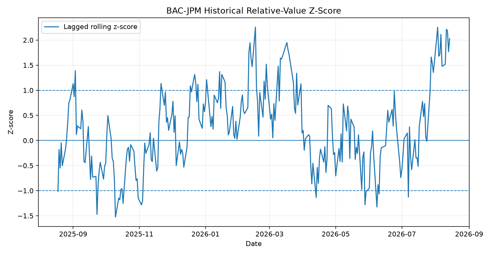
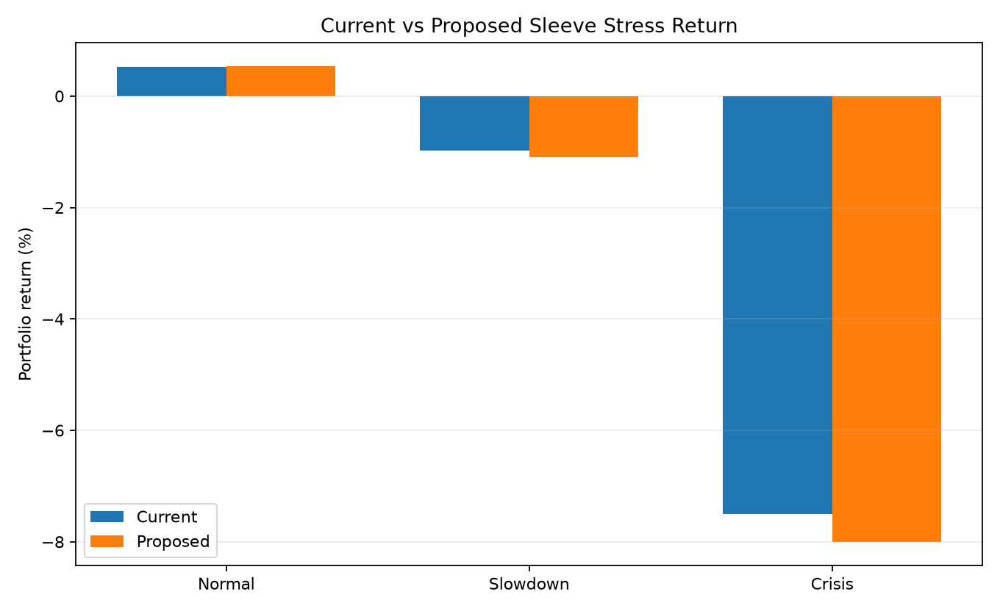
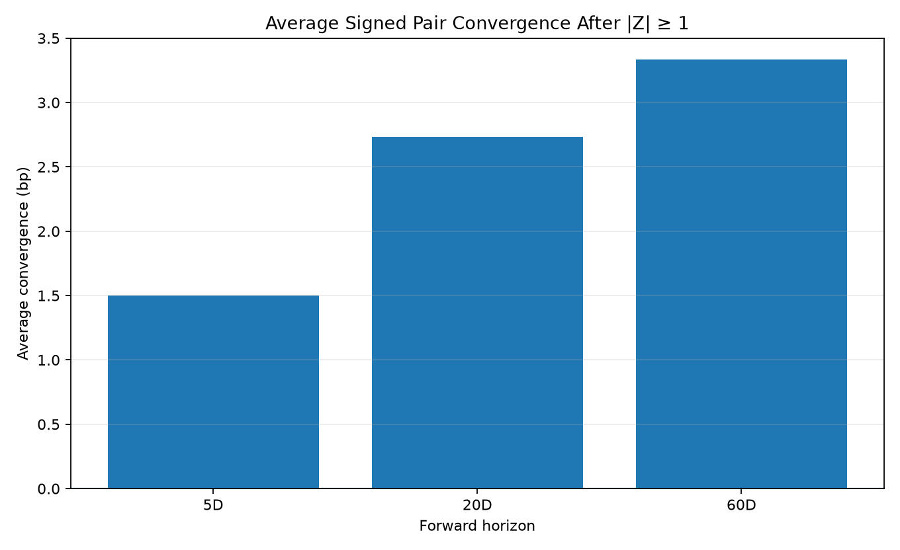
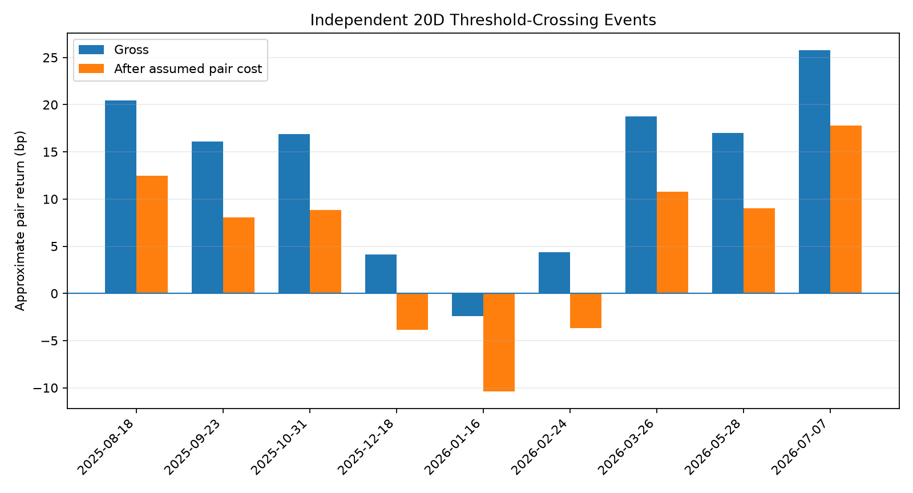

Institutional fixed-income research dashboard
Corporate Bond Portfolio Management
A reproducible synthetic research framework connecting credit analysis, relative value, risk decomposition, expected return, portfolio construction, stress testing, trading, attribution, and chronological validation.
Synthetic research dataAs of 2026-08-14$100M Financials sleevePython research pipeline
BAC OAS
84.43 bp
Current representative spread
JPM OAS
67.72 bp
Current representative spread
Pair differential
16.71 bp
BAC minus JPM
Historical z-score
+2.03σ
Lagged historical benchmark
Blended RV
+6.57 bp
Residual spread compensation
Expected 1M return
61.50 bp
Synthetic model estimate
Relative value
The signal asks whether observed spread compensation remains attractive after credit, bond characteristics, liquidity, and a regression confirmation layer.
Model actionAdd BAC / Reduce JPM
BAC trades 16.71 bp wider than JPM in the representative synthetic pair. The lagged historical z-score is +2.03σ and the blended unexplained spread component is +6.57 bp. The signal supports a moderate relative overweight, but position size remains constrained by concentration and stress loss.
Historical mean pair spread12.58 bp
CDS differential7.51 bp
Fair differential7.92 bp
CDS / bond RV+8.79 bp
Regression RV+4.57 bp
Blended RV+6.57 bp

BAC/JPM relative-value decomposition.
Issuer dashboard
| Asset | Credit view | OAS bp | Hist z | Blended RV bp | Expected 1M bp | Action |
|---|---|---|---|---|---|---|
| JPM | Very Strong | 67.72 | -2.03 | -5.51 | 23.05 | Reduce |
| BAC | Strong | 84.43 | +2.03 | +6.57 | 61.50 | Add |
| C | Moderate | 83.00 | -1.19 | +1.62 | 46.19 | Add |
| WFC | Moderate+ | 75.64 | +0.67 | +1.95 | 46.59 | Add |

Observed BAC-JPM spread differential through time.

Lagged historical z-score used for the relative-value signal.
Portfolio construction
Expected return is translated into allocation subject to duration, liquidity, cash, and concentration constraints. The optimizer is a decision-support layer rather than an automatic portfolio rule.
Current vs model allocation
JPM
-15.3 pp
BAC
+6.4 pp
C
+7.9 pp
WFC
-2.6 pp
Cash
+3.7 pp
Risk snapshot
Portfolio DV01$36,585/bp
Portfolio CS01$34,756/bp
Largest CS01 contributorJPM
- Allocation changes are evaluated together with issuer CS01 and stress loss.
- Cash remains an explicit portfolio asset and liquidity buffer.
- Relative-value alpha is not allowed to override risk-budget constraints.
Stress testing
Scenario analysis asks whether incremental spread compensation is sufficient relative to downside risk rather than attempting to predict the timing of a crisis.
Scenario returns
| Portfolio | Normal | Slowdown | Crisis |
|---|---|---|---|
| Current | +0.53% | -0.98% | -7.50% |
| Optimizer | +0.52% | -1.08% | -7.74% |
| Final | +0.52% | -1.08% | -7.74% |

Current vs proposed BAC/JPM trade stress comparison.
Chronological validation
Signal quality is evaluated using future pair-spread changes only. Historical means and z-scores are lagged, and an independent-event test blocks overlapping entries.
Forward convergence by horizon
| Horizon | Signals | Avg convergence | Hit rate | Avg gross pair return | Clipped q |
|---|---|---|---|---|---|
| 5D | 56 | 1.50 bp | 80.4% | 6.87 bp | 0.48 |
| 20D | 47 | 2.73 bp | 87.2% | 12.37 bp | 0.67 |
| 60D | 42 | 3.33 bp | 88.1% | 15.19 bp | 0.78 |
Independent events9
Gross hit rate88.9%
Avg net pair return5.45 bp
Net-positive rate66.7%
Clipped convergence ratio0.72
Pair cost assumption8.0 bp

Convergence and pair-return behavior across forward horizons.

Non-overlapping 20-business-day event returns after an explicit transaction-cost assumption.
Research notes
Detailed methodology, data definitions, calculations, and validation assumptions are kept alongside the reproducible code.
BAC / JPM case studyEnd-to-end relative-value thesis, trade sizing, and stress interpretation.
RV validationChronological signal outcomes and non-overlapping event backtest.
MethodologyModel architecture, assumptions, formulas, and portfolio process.
Data contractSecurity master, market, fundamental, CDS, and liquidity schemas.